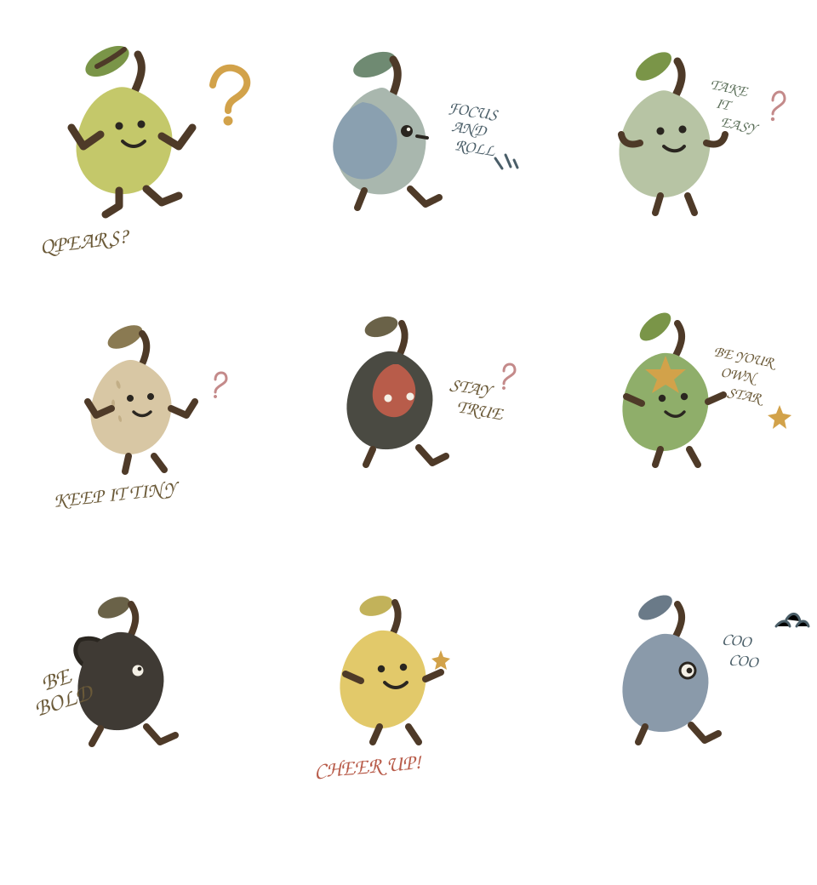

Measured small
If it does not rattle in the box, our quality team has failed.
Est. in a group chat · Powered by Square
Qpears is a catalog of small objects with large opinions. The storefront is composed. The inventory rattles. Checkout is Square, which is the only square thing we take seriously.
The collection
Four pieces from the current season of tiny commerce.
If it does not rattle in the box, our quality team has failed.
Payments are real. Product sizes remain a matter of interpretation.
Every object includes one joke and zero nutritional information.

Atelier notes
The template is professional on purpose. The catalog is not. Qpears exists for people who want a quiet, considered storefront that still sells one sock and calls it a pear.
The longer version